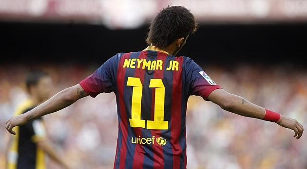
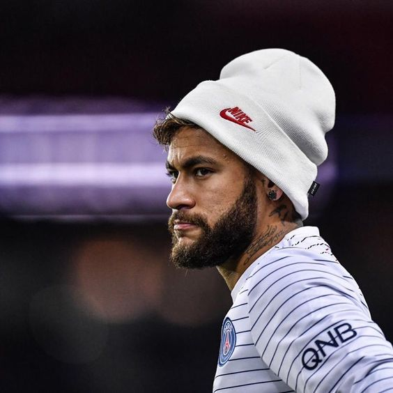

El Astro Brasileño Ex-Barcelonista.
Todo lo que tienes que saber sobre Neymar Jr.
Neymar da Silva Santos Junior, conocido popularmente en el mundo como Neymar Jr, es un futbolista brasileno que nacio en Mogi das Cruzes, estado de Sao Paulo el 5 de febrero de 1992 y juega como extremo o segundo delantero. Es hijo de Nadine su madre y Neymar Santos quien es su padre, del cual heredo su nombre y pasion por el futbol ya que en el pasado tambien fue futbolista. Desde muy pequeno Neymar mostro su amor por el futbol sala y futbol callejero y fue en estos deportes que empezo a mostrar todo su talento futbolistico..